Odo आपकी डिलीवरी और राइडशेयर शिफ्ट, काम के लिए चलाए गए किलोमीटर और काम के खर्च का हिसाब रखता है। टैक्स के समय यह आपके अकाउंटेंट या myTax के लिए ज़रूरी सब कुछ दे देता है। सेट करने में लगभग 5 मिनट लगते हैं।
💰 Uber आपकी कमाई से टैक्स नहीं काटता। आप पूरा टैक्स एक साथ, वित्त वर्ष के आख़िर में (30 जून के बाद) भरते हैं। Odo दिखाता है कि वह लगभग कितना होगा, आपके दर्ज किए हर km और काम के खर्च से उसे कम करता है, और बताता है कि हर पेमेंट से कितना अलग रखना है ताकि बिल भरने के पैसे तैयार रहें।
आपको क्या चाहिए
इंटरनेट वाला फ़ोन (iPhone या Android)
एक ईमेल पता
आपकी कार की ओडोमीटर रीडिंग (डैशबोर्ड पर km वाली संख्या)
App Store या Google Play से कुछ डाउनलोड नहीं करना है। Odo एक लिंक से खुलता है और फिर आम ऐप की तरह आपकी होम स्क्रीन पर रहता है। इसे इस्तेमाल करना फ्री है।
1
Odo का लिंक खोलें
अपने फ़ोन पर inova07.github.io/odo खोलें।
iPhone:Safari इस्तेमाल करें (नीला कंपास)। Android:Chrome या Samsung Internet इस्तेमाल करें।
एक छोटा वेलकम टूर शुरू होगा। पहले अपनी भाषा चुनें, फिर दिखाएँ या छोड़ें पर टैप करें।
यह सिर्फ़ एक बार करना है। उसके बाद Odo एक टैप में पूरी स्क्रीन पर खुलेगा और बिना सिग्नल के भी चलेगा।
iPhone (Safari)
स्क्रीन के नीचे Share बटन पर टैप करें (ऊपर की ओर तीर वाला चौकोर)।
नीचे स्क्रॉल करें और Add to Home Screen पर टैप करें।
ऊपर दाएँ कोने में Add पर टैप करें।
अब से Odo को होम स्क्रीन पर नए Od आइकन से खोलें।
Android (Chrome)
⋮ मेन्यू पर टैप करें (ऊपर दाएँ तीन बिंदु)।
Install app या Add to Home screen पर टैप करें।
Install या Add पर टैप करें।
होम स्क्रीन पर नए आइकन से Odo खोलें।
Android (Samsung Internet)
≡ मेन्यू पर टैप करें (नीचे दाएँ तीन लाइनें)।
Add page to पर, फिर Home screen पर टैप करें।
Add पर टैप करें।
एड्रेस बार में छोटा install आइकन दिखे? उस पर टैप करने से भी यही होगा।
💡 बटन नहीं मिल रहा? तो Odo को बुकमार्क कर लें। iPhone: Share → Add Bookmark। Chrome: ⋮ → स्टार पर टैप करें। Samsung Internet: ≡ → Add page to → Bookmarks।
3
फ्री खाता बनाएँ
खाते के बिना आपके रिकॉर्ड सिर्फ़ इसी फ़ोन में रहते हैं। खाता बनाने पर Odo सब कुछ बैकअप करता है, और नए फ़ोन पर साइन इन करके आप सब वापस पा सकते हैं।
ऊपर दाएँ व्यक्ति वाले आइकन पर टैप करें।
नया खाता पर टैप करें।
अपना ईमेल लिखें और एक पासवर्ड बनाएँ (कम से कम 6 अक्षर)।
खाता बनाएँ पर टैप करें। अगर Odo कहे, तो Odo का ईमेल खोलकर लिंक पर टैप करें, फिर साइन इन करें।
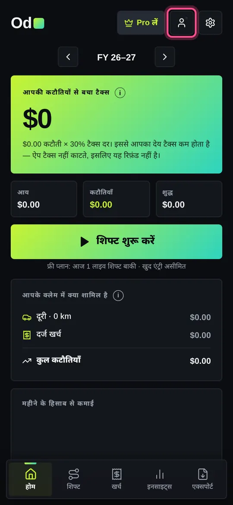
1. व्यक्ति वाले आइकन पर टैप करें
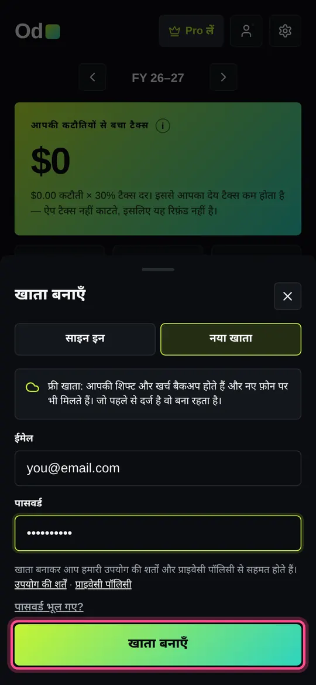
2. नया खाता → खाता बनाएँ
💡 नया फ़ोन? लिंक खोलें, व्यक्ति वाले आइकन पर टैप करें, साइन इन चुनें और वही ईमेल और पासवर्ड डालें। आपके रिकॉर्ड वापस आ जाएँगे। व्यक्ति आइकन पर हरा बिंदु मतलब बैकअप हो गया है।
4
Odo को अपने बारे में बताएँ (1 मिनट)
सेटिंग्स खोलने के लिए ऊपर दाएँ गियर आइकन पर टैप करें।
आपके वाहन: कार, मोटरबाइक या साइकिल चुनें।
क्षेत्र: इसे ऑस्ट्रेलिया पर ही रहने दें।
इस साल की अनुमानित कुल आय: इस साल की पूरी कमाई का मोटा अंदाज़ा, किसी दूसरी नौकरी समेत। Odo इससे आपकी टैक्स दर निकालता है।
नीचे सेटिंग्स सेव करें पर टैप करें।
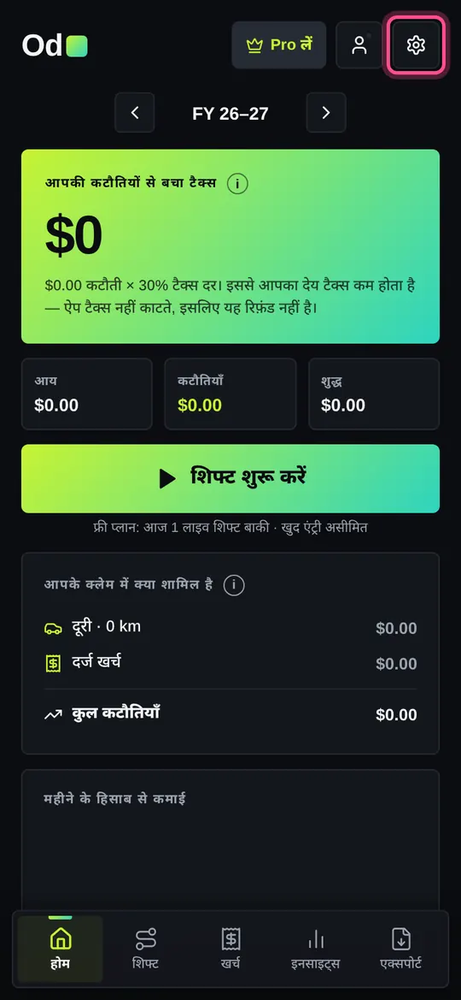
1. गियर आइकन पर टैप करें
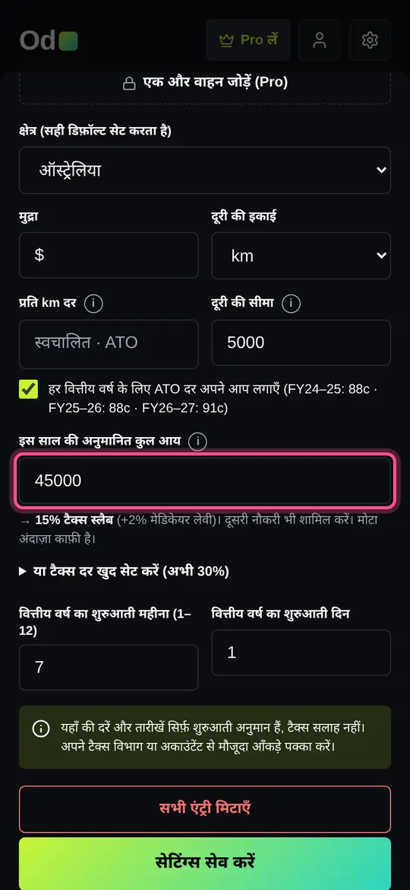
2. अपनी अनुमानित आय डालें
💡 साइकिल या मोटरबाइक चलाते हैं? Odo राइडर मोड में चला जाता है। km दर सिर्फ़ कार के लिए है, इसलिए आपका क्लेम आपके खर्चों से आता है: फ़ोन, मरम्मत, बैटरी, बैग और गियर।
5
हर शिफ्ट दर्ज करें
आपके किलोमीटर आमतौर पर आपका सबसे बड़ा टैक्स क्लेम होते हैं। हर शिफ्ट में बस दो टैप।
काम शुरू करते समय:शिफ्ट शुरू करें पर टैप करें, ऐप चुनें (Uber, DoorDash…), अपनी ओडोमीटर संख्या लिखें, काम शुरू पर टैप करें। आप Odo बंद कर सकते हैं; टाइमर चलता रहेगा।
काम खत्म होने पर:शिफ्ट खत्म करें पर टैप करें, नई ओडोमीटर संख्या और अपनी कमाई लिखें, फिर शिफ्ट सेव करें पर टैप करें।
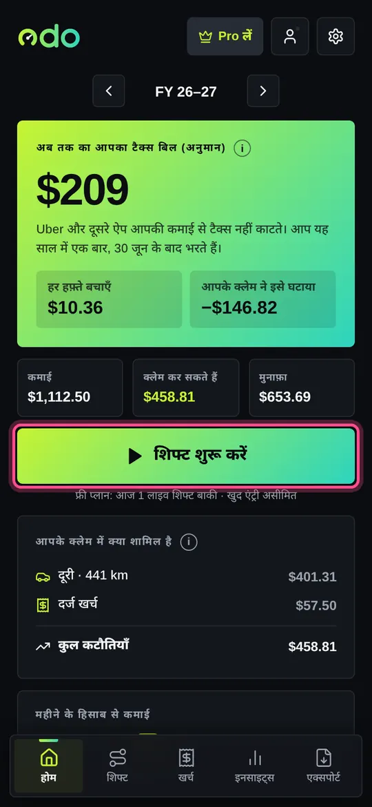
1. शिफ्ट शुरू करें पर टैप करें
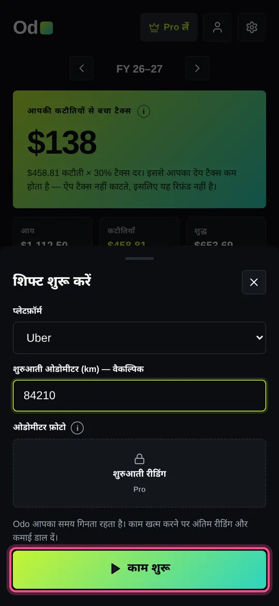
2. ओडोमीटर → काम शुरू
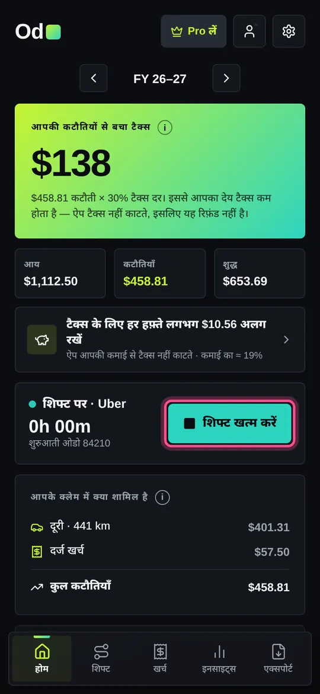
3. काम के बाद: शिफ्ट खत्म करें
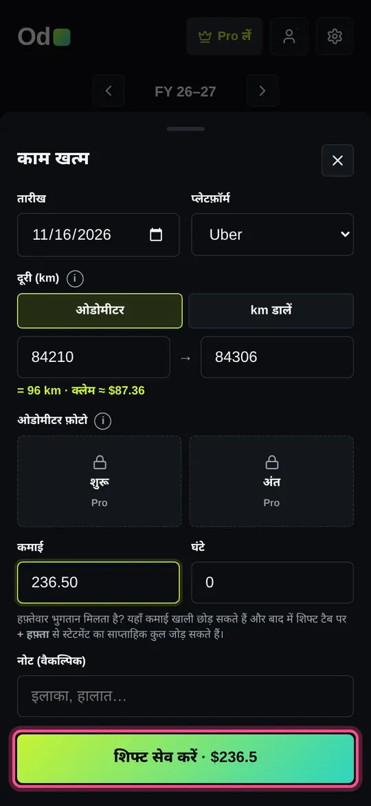
4. अंतिम ओडोमीटर + कमाई → सेव
PROअपने ओडोमीटर की फ़ोटो लें
Odo Pro में, शिफ्ट शुरू करते समय शुरुआती रीडिंग पर टैप करके ओडोमीटर की फ़ोटो लें, और खत्म करते समय अंत की फ़ोटो जोड़ें। हर फ़ोटो तारीख और समय के साथ शिफ्ट में सेव होती है और आपके खाते में बैकअप होती है।
यह क्यों ज़रूरी है: ATO आपसे पूछ सकता है कि आपने काम के किलोमीटर कैसे निकाले, और टैक्स रिटर्न भरने के बाद रिकॉर्ड 5 साल तक रखना ज़रूरी है। हर शिफ्ट की शुरुआत और अंत की फ़ोटो एक मज़बूत सबूत है जिस पर सवाल उठाना मुश्किल है। फ़ोन बदलने पर भी कोई रीडिंग खोएगी नहीं या गलत नहीं लिखी जाएगी। टैक्स के समय एक्सपोर्ट → फ़ोटो डाउनलोड करें से सारी फ़ोटो एक ZIP में आपके टैक्स एजेंट के पास पहुँच जाती हैं।
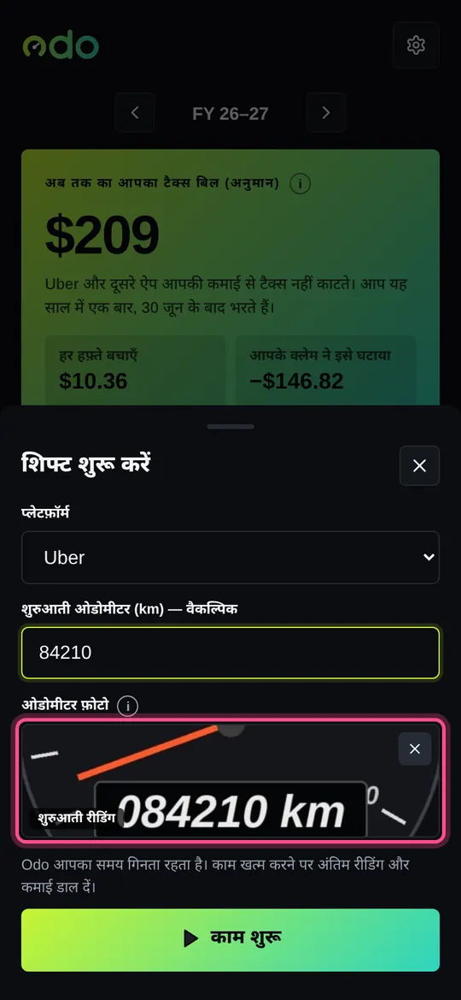
ओडोमीटर फ़ोटो शिफ्ट के साथ सेव
💡 शुरू करना भूल गए? शिफ्ट टैब → + शिफ्ट से बाद में भर दें। हफ़्ते में पेमेंट मिलता है? शिफ्ट टैब → + हफ़्ता और अपनी साप्ताहिक स्टेटमेंट का कुल लिख दें। सिर्फ़ काम के km गिने जाते हैं: घर से पहली डिलीवरी तक का रास्ता शायद न गिना जाए।
6
काम के खर्च जोड़ें
खर्च टैब पर जाएँ और खर्च जोड़ें पर टैप करें।
एक श्रेणी चुनें (जैसे फ़ोन और इंटरनेट) और रकम लिखें।
काम के लिए उपयोग को उतना खिसकाएँ जितना काम के लिए है। फ़ोन 70% डिलीवरी में लगता है? 70% रखें।
सेव करें पर टैप करें।
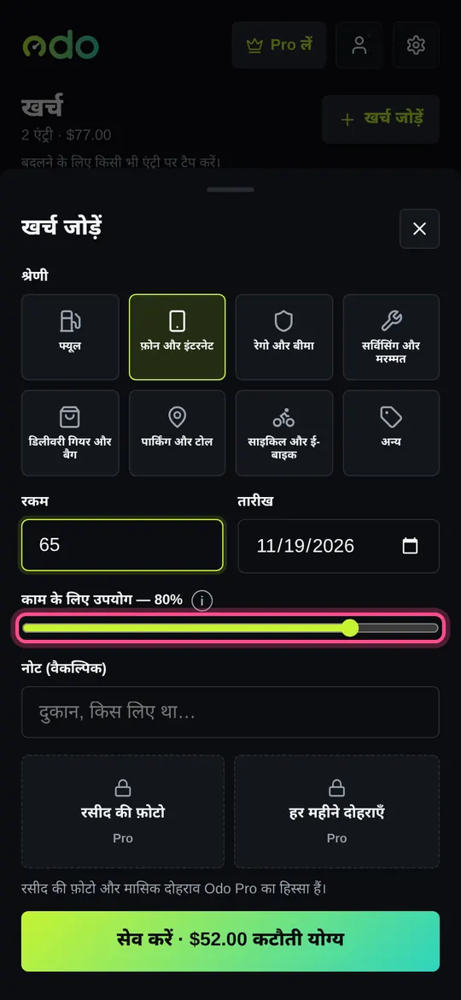
काम के लिए कितना, यह सेट करें
⚠️ कार चलाते हैं? तो पेट्रोल, रेगो, बीमा या सर्विसिंग न जोड़ें। ATO की km दर (2026–27 में 91 सेंट प्रति km) में ये पहले से शामिल हैं। पार्किंग और टोल जोड़ सकते हैं।
7
अपने आँकड़े देखें
अब तक का आपका टैक्स बिल
आपको कितना टैक्स देना होगा, उसका मोटा अनुमान। ऐप आपकी कमाई से टैक्स नहीं काटते, इसलिए आप इसे साल में एक बार, 30 जून के बाद भरते हैं। आपका दर्ज किया हर km और काम का खर्च इसे कम करता है।
हर पेमेंट से अलग रखें
हर पेमेंट का वह हिस्सा जो टैक्स के लिए बचाना है (जैसे 19%), और इस हफ़्ते यह लगभग कितना है। टैक्स वित्त वर्ष के आख़िर में भरा जाता है, इसलिए यह पैसा पक्का करता है कि बिल भर सकें।
कमाई / काम का खर्च / मुनाफ़ा
आपने कितना कमाया, आपका काम का खर्च (km और खर्चे), और जो बचा: आपका मुनाफ़ा। काम का खर्च वापस मिलने वाला पैसा नहीं है: इससे वह रकम कम होती है जिस पर टैक्स लगता है।
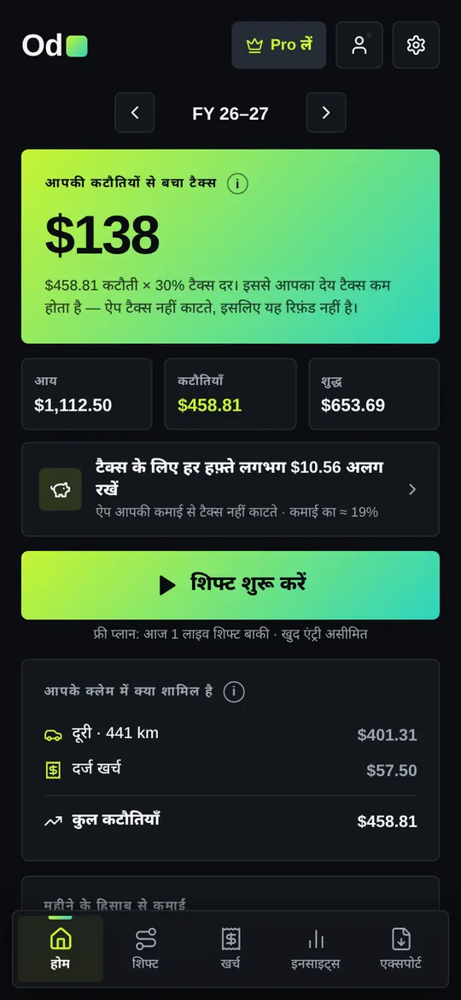
पूरा साल एक नज़र में
💡 छोटी सी जानकारी के लिए किसी भी ⓘ आइकन पर टैप करें।
8
टैक्स के समय: एक्सपोर्ट करें
30 जून के बाद एक्सपोर्ट टैब खोलें।
अपनी शिफ्ट, खर्च और सारांश डाउनलोड करें। ये Excel या Google Sheets में खुलते हैं।
इन्हें अपने टैक्स एजेंट को भेजें, या myTax में इनके कुल इस्तेमाल करें।
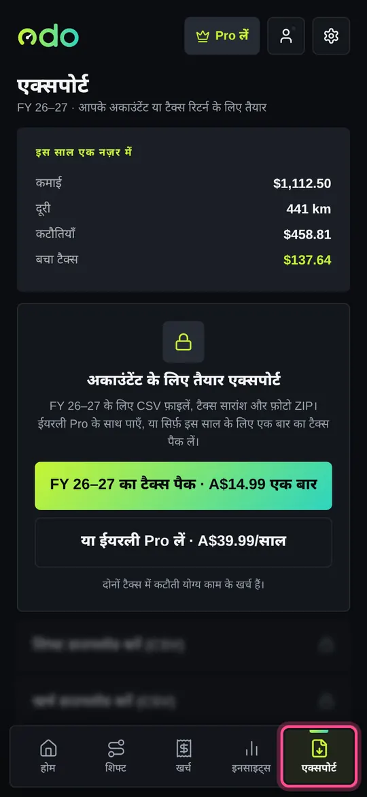
आपके अकाउंटेंट के लिए सब कुछ
💡 एक्सपोर्ट ईयरली Pro के साथ आते हैं, या सिर्फ़ एक साल के लिए एक बार का टैक्स पैक (A$14.99) खरीदें। दोनों काम के खर्च हैं जिन्हें आप क्लेम कर सकते हैं।
Odo के बारे में
नमस्ते, मैं Rickie हूँ 👋 मैं ऑस्ट्रेलिया में पेरोल में काम करता हूँ, इसलिए सैलरी और टैक्स मेरे रोज़ के काम का हिस्सा हैं।
मेरे कई दोस्त Uber और दूसरे ऐप्स पर गाड़ी चलाते हैं। टैक्स के समय उनमें से ज़्यादातर के पास न अपने खर्चों का कोई रिकॉर्ड होता था, न उन किलोमीटर का जिन्हें क्लेम करके वे टैक्स कम कर सकते थे। यह अफ़सोस की बात है, क्योंकि यह उनकी मेहनत की कमाई है, और हर डॉलर मायने रखता है।
इसलिए मैंने Odo बनाया: हर शिफ्ट, हर किलोमीटर और काम के हर खर्च को दर्ज करने का आसान तरीका, ताकि टैक्स के समय सब कुछ तैयार रहे।
स्वतंत्र। Odo का Uber, DoorDash, Menulog या ATO से कोई संबंध नहीं है।
मदद चाहिए?
पूरी गाइड: सेटिंग्स → Odo कैसे इस्तेमाल करें, या ऑनलाइन गाइड।
कोई सवाल? सेटिंग्स → मदद और सपोर्ट। अगर आप साइन इन हैं, तो हम वहीं ऐप में जवाब देंगे।
Odo रिकॉर्ड रखने का टूल है, टैक्स सलाह नहीं। मौजूदा नियम ato.gov.au पर या किसी रजिस्टर्ड टैक्स एजेंट से पक्का करें। · अपडेट: 17 नवंबर 2026